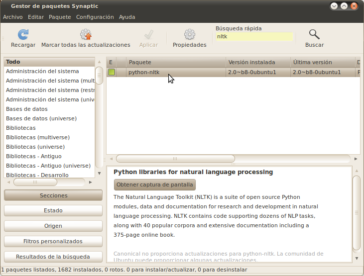
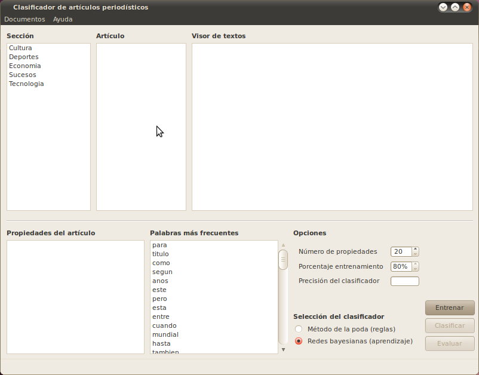
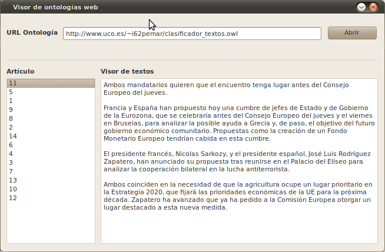
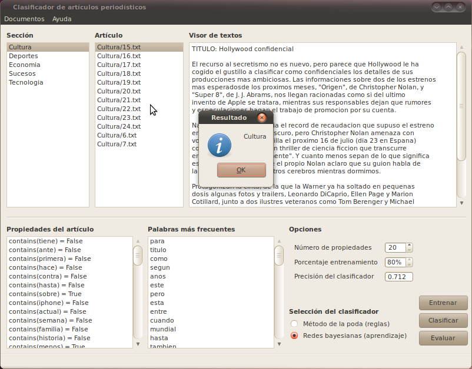
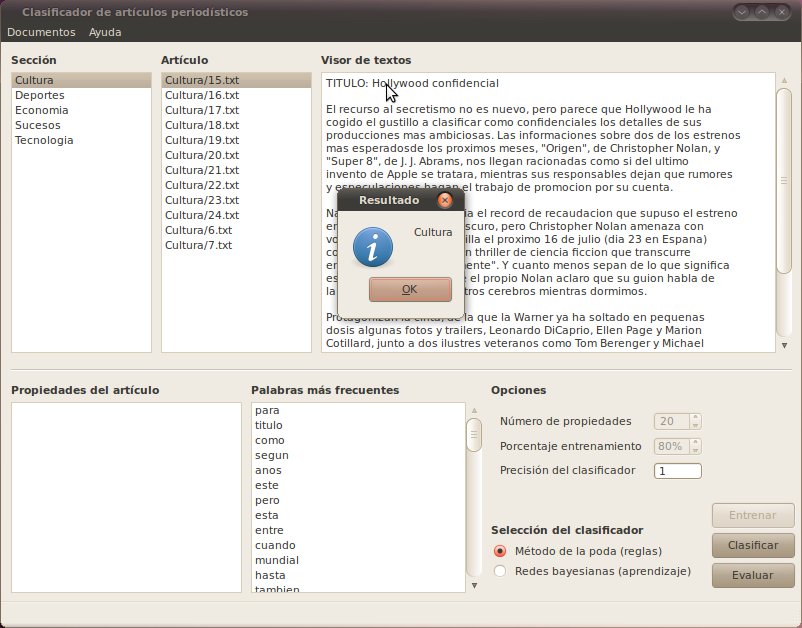

Bienvenidos a PyClassify, una aplicación de ingeniería del conocimiento que es capaz de clasificar artículos periodísticos en categorias dependiendo de la temática del artículo. Puede utilizar este manual para ponerse a trabajar inmediatamente o bien, como fuente de ayuda para futuras consultas a medida que vaya necesitando de ellas.
PyClassify está desarrollado de la forma más sencilla y más cómoda para el usuario, con ello se pretende que un usuario pueda controlar la aplicación rápidamente, sin necesidad de grandes conocimientos de informática, sin parámetros ni procesos de configuración complejos que puedan entorpecer la puesta en marcha de la aplicación. A continuación se describirá brevemente cada uno de los apartados del manual:
1. REQUISITOS DE LA APLICACIÓN
Para utilizar la aplicación PyClassify, necesita como mínimo un equipo de sobremesa o similar con las siguientes características:
2. INSTALACIÓN DE LA APLICACIÓN
Para que la aplicación pueda funcionar es necesario instalar las siguientes librerias.
Para facilitar la instalación de las librerias en Linux se puede usar el gestor de paquetes Synactic. Synaptic es un avanzado sistema para instalar o eliminar aplicaciones de tu sistema con un entorno es gráfico. Para ejecutar Synaptic elige Sistema -> Administración -> Gestor de paquetes Synaptic. Este gestor de paquetes permitirá instalar, paquetes de una forma gráfica muy sencilla.

Para instalar cada paquete primero se busca mediante la opción buscar y después se pulsa con el botón derecho en el paquete deseado y se selecciona “marcar para instalar”. Se repite el proceso para cada una de las librerias o paquetes mencionados en el apartado anterior. Una vez esten todos los paquetes se pulsa en aplicar para proceder a su instalación.La librería NLTK no se encuentra en los repositorios de versiones antiguas de linux, si se diera este caso se pude descargar de la siguiente dirección.
NLTK: http://nltk.googlecode.com/files/nltk-2.0b8.tar.gz
Una vez se han instalado las
librerias el siguiente paso será copiar los archivos necesarios de
la aplicación a nuestro PC. Para ello copiamos la carpeta
PyClassify en el directorio deseado y ejecutamos el archivo
main.py. La aplicacion se deberá de ejecutar sin problemas.
3. PRIMER CONTACTO
Antes
de comenzar a describir cada una de las diferentes opciones de la
aplicación se hará una breve descripción de la aplicación.

En
la parte superior izquierda se encuentra un recuadro con cada una de
las diferentes categorias de clasificación. Al seleccionar una
categoría, en el recuadro Artículo que se encuentra justo a
la derecha, aparecerán los artículos de esta categoría
predefinidos para realizar una prueba. Al
seleccinar un artículo del recuadro Artículo este aparecerá en el
Visor de texto que se encuetra en la parte superior derecha de la
vista.
En la parte inferior izquierda se encuentra un recuadro donde se mostrarán las propiedades de los artículos en el método de clasificación mediante redes Bayesianas. Cada una de las propiedades aparecerán calificadas con “true” o “false”. Gracias a esta calificación se determinará la categoria a la que pertenece el artículo a clasificar.
En el centro inferior de la aplicación aparecerá un recuadro que muestra una lista con las 100 primeras palabras del corpus que ha sido extraidas al iniciar la aplicación.
En la parte inferior derecha se encuentran cada una de las diferentes opciones de la aplicación.
4. REDES BAYESIANAS
Los pasos para realizar una clasificación mediante redes bayesianas son los siguientes.
5. MÉTODO DE LA PODA
Para realizar una clasificación mediante el “Método de la poda”. Se realizaran los siguientes pasos:
6. VISOR WEB
Mediante el Visor Web se podrán extraer artículos desde la web. Para ello será necesario introducir una URL donde se encuentre la ontología. Una vez cargada la ontología se podrán visualizar los textos mediante el Visor de textos. Si la ontología es la deseada se podrá cargar en la aplicación pulsando el botón Abrir.

7. PRUEBAS
En esta sección se mostrarán dos pruebas, una para cada clasificación.

